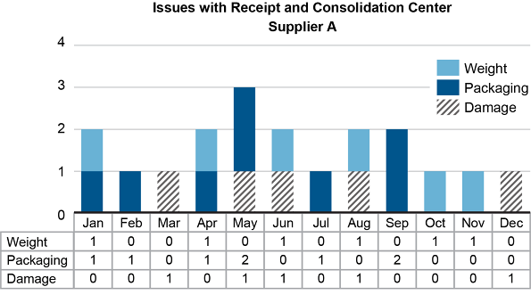
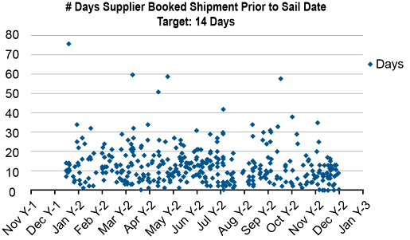
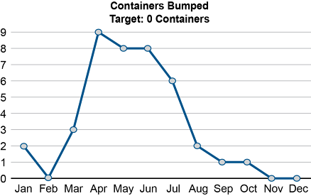

Overview
- Developing a useful set of supply chain metrics is key to achieving desired results.
- The place to start is to understand the objectives of any measurement system.
- Choosing the right way to present measurement results can strongly influence their effectiveness, so balanced…
- Since use of a formal measurement methodology can help ensure a complete measurement system, the…
- Supply chain metrics are useful when there are sound processes for gathering performance data, analyzing…
- Metric selection and a metric selection framework are also discussed.
The basic objectives of any measurement system are as follows:
The process of gathering performance data involves the following steps:
Assessing data collection feasibility; for example, for customers/suppliers:
The process of analyzing performance involves the following steps:
Turning data (raw observations and measurements) into information:
The process of improving performance involves the following steps:
The ASCM Supply Chain Dictionary defines a dashboard as “an easy-to-read management tool similar to an automobile’s dashboard designed to address a wide range of business objectives by combining business intelligence and data integration infrastructure.”
One type of dashboard is an executive dashboard. The ASCM Supply Chain Dictionary defines an executive dashboard as
Metrics provide a way to keep score, so it was only natural that someone would create a business-related scorecard. If an organization’s objective is to improve order fill rate from 93 percent to 98 percent, a scorecard can provide a means to compare actual performance against target performance. However, if the things that are being measured do not address some key objectives, this measurement imbalance can result in those objectives being ignored. To ensure that both the short- and long-term objectives are addressed, in 1992 Robert S. Kaplan and David Norton introduced the balanced scorecard™ (BSC), which the ASCM Supply Chain Dictionary defines as
Note the following points about this scorecard:

image92.png

image93.png

image94.png

image95.png

image96.png

image97.png

image98.png

image99.png

image100.png

image101.png

image102.png

image103.png

image104.png

image105.png
SCOR DS does apply to the following activities:
SCOR DS does not apply to the following processes:
How do we measure performance when supply chain performance depends on many partners throughout the process? One way to do this is to develop a common language and set of metrics to help all parties agree on the KPIs that should be measured across the supply chain, as ASCM did with the SCOR Digital Standard (SCOR DS). The ASCM Supply Chain Dictionary defines the Supply Chain Operations Reference (SCOR) model in part as follows:
Note that the updated SCOR DS processes are orchestrate, plan, source, transform, order, fulfill, and return, but the ASCM Supply Chain Dictionary update for this revision is forthcoming.

image106.png
The ASCM Supply Chain Dictionary defines SCOR metrics as follows:

image107.png
Level 1 measures of reliability include perfect customer, supplier, and return order fulfillment respectively. The ASCM Supply Chain Dictionary defines perfect order fulfillment as “a measure of an organization’s ability to deliver a perfect order.” The ASCM Supply Chain Dictionary defines a perfect order as follows:
A perfect order must satisfy all of the following conditions:
The calculation for perfect customer order fulfillment is as follows:
image108.png
The customer order fulfillment cycle time metric is the only Level 1 measure of supply chain responsiveness. The SCOR DS website defines customer order fulfillment cycle time (order fulfillment lead time or customer order cycle time), RS.1.1., as follows:
Customer order fulfillment cycle time is calculated as follows (in days):
image109.png
Customer order fulfillment cycle time is called a gross cycle time metric, meaning that there may be some dwell time included in this metric in addition to the customer order fulfillment process time (all value-added or non-value-added activities performed during the cycle). The SCOR DS website defines order fulfillment dwell time as “any lead time created by the customer during the order fulfillment process during which no activity takes place.” Dwell time is created by customers placing orders earlier than necessary, such as an order placed 14 days before the desired fulfillment date, even though it only takes the organization 6 days to fulfill the order. Here, the gross cycle time is 14 days. For this reason, a gross cycle time metric does not truly reflect the organization’s responsiveness. Rather than trying to get customers to place orders exactly on time, organizations should view earlier-than-needed ordering as a benefit because it enables optimization of multiple orders.

image110.png
To calculate, assume no expedite costs, and apply the following formula:

image111.png

image112.png
The ASCM Supply Chain Dictionary defines cost of goods sold (COGS) as “an accounting classification useful for determining the amount of direct materials, direct labor, and allocated overhead associated with the products sold during a given period of time.” COGS is a financial accounting measurement of the cost associated with buying raw materials and producing the finished goods that were sold in the period. The cost associated with buying raw materials and the cost to transform in the SCOR DS model is generally included in this calculation. The formula includes direct costs (materials, labor) and indirect costs related to production (overhead). The calculation for COGS = Cost to Transform, or COGS = CO.2.6 (Direct Material cost) + CO.2.7 (Direct Labor Cost) + (CO.2.8 Indirect Costs Related to Production), or more simply:

image113.png
Profit metrics include the following:

image114.png

image115.png

image116.png
The ASCM Supply Chain Dictionary has some relevant definitions:

image117.png
The ASCM Supply Chain Dictionary defines return on supply chain fixed assets as “the return an organization receives on its invested capital in supply chain fixed assets. This includes the fixed assets used to...” orchestrate, plan, source, transform, order, deliver, and return. Fixed assets include property, plant, and equipment. Return on fixed assets is calculated as follows (note that in this calculation TSCMC is not expressed as a percent of revenue):

image118.png

image119.png
Another metric used to measure supply chain asset management is return on working capital. The ASCM Supply Chain Dictionary defines return on working capital as “a measure of profit on the amount of capital consumed. It is calculated as after-tax operating income divided by net working capital.”

image120.png
One tool that can be used to select advanced supply chain capabilities is the Digital Capabilities Model (DCM) for Supply Networks, which is defined by the ASCM Supply Chain Dictionary as follows:
The DCM for Supply Networks is a joint development of ASCM and Deloitte. It is designed to help organizations increase their supply chain maturity level to that of an orchestrated supply chain. This includes breaking down organizational silos more, reducing buffer inventories and safety stocks by providing end-to-end visibility, and better management of the bullwhip effect. The model defines capabilities as “the synergistic combination of people, processes, and technologies that creates sustained business value.”

image121.png
Here is a brief overview of each of the capabilities:
TERM / CONCEPT
ASCM definition: What is a dashboard?
ANSWER
One type of dashboard is an executive dashboard. The ASCM Supply Chain Dictionary defines an executive dashboard as a set of cross-functional metrics for measuring company performance that indicates the health of the company. It usually includes the company’s key performance indicators. The key advantages of using dashboards are timeliness and self
Click card to flip · Use arrows or shuffle to practise
Question 1
Which SCOR Level 1 metric covers orders delivered complete, on time, undamaged, and with correct documentation?
A.Order fulfillment cycle time
B.Upside flexibility
C.Perfect order fulfillment
D.Total supply chain management cost
Question 2
SCOR Order Fulfillment Cycle Time measures:
A.Time from product launch to market
B.Time from customer order receipt to customer delivery
C.Time from PO to supplier delivery
D.Time to manufacture one unit
Question 3
Upside supply chain flexibility in SCOR is a metric for:
A.Reliability
B.Responsiveness
C.Agility
D.Cost
Question 4
Total Supply Chain Management Cost as a percentage of revenue is a SCOR metric for:
A.Reliability
B.Responsiveness
C.Agility
D.Cost